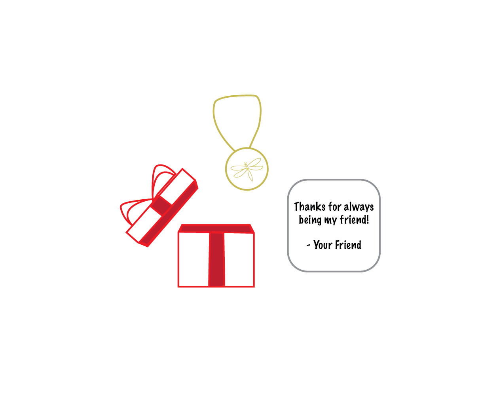

The song, "You're Somebody Else" by Flora Cash was released on April 21, 2017. The lyrics of the song are as follows. Following the lyrics is my analysis of the song. Check out the song on Amazon music, Spotify, YouTube, and other streaming services.
The speaker is seeing a different side of someone they know well but the person wouldn’t be able to see this side until they have grown and they are old enough to understand. Sometimes people don’t see certain sides of themselves, maybe because they don’t want to but to someone who has been in the situation or maybe went through a similar phase, it is more clear because they understand from their own experience. Even though the speaker in the song is trying to help, there will always be things that are beyond their control. The person in question controls how much of their true self that they expose. At one point the speaker could see who they really were and how they have changed.
This is the realization that the speaker comes to when they notice that their friend has changed and is no longer the person they once knew. It is difficult to accept because while they still look and sound the same as they always have, they are not acting the same. This change makes the speaker concerned for their friend and how the change will impact their relationship.
The speaker believes that their friend was good for them and completed them. The speaker feels like they have lost a part of themselves as a result of the change that their friend has experienced. The speaker is thinking about everything that has happened and trying to process the fact that their friend is not the same anymore. This is hard to accept and it's causing the speaker great anguish.
This final part is the same as how the song started; the speaker is circling back to how they once knew who their friend really was. This places further emphasis on the change that has occurred in their friend and how the speaker is struggling to accept it.
This song doesn’t have to mean exactly what the lyrics translate to. This song can have a new meaning to all the different people who experience it. For me, it was easiest to connect this song to a friend or family member but for someone else this could be a boyfriend or girlfriend. Additionally, this “friend” that I mentioned in my analysis could be the speaker’s past self looking in on their current self. In the Outro Analysis, the gift is a necklace with a dragonfly on it, which is a symbol of change. The present could also represent the gift of friendship. The singers of this song had an intention and an objective when they wrote the song but part of that is open to interpretation from listeners which really creates the beauty of music and art in general.